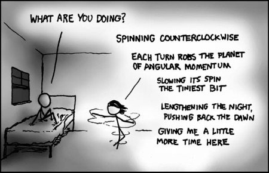

"Why was I born, if it wasn't forever?" --Ionesco
You’re getting old.
Right now. Look at you. That body is deteriorating as we speak.
Whether you are 7 or 22 or 58 or 88, you're inexorably marching towards death.
It could happen at any moment. No matter how well the rules for health are followed, or if you smoke or eat the chip or lie like a sloth on the couch.
We all know this. Kind of.
Still we like to pretend “getting older” hasn’t been happening since our birth. We pretend that it takes a while and then oldness hits all of a sudden- 40? 50? and Bam! Moisturizer. Sensible shoes. Posture exercises. Sweatpants.
Not to mention lack of sexual attractiveness, and invisibility. Because let’s face it, we’ve relied for years on the supposed value of being seen and wanted. Value we've taken credit for, but actually have nothing to do with. I mean, whose doing is it if we are graced with beauty, or if others “want” us?
Not us.
And then along comes a day when we have to find some other tool to manipulate others to see these selves in a way we like.
Aging is a challenge to the story of who and what we are, a challenge to the image of the me.
Turns out that, rather than the body, it’s actually the carefully crafted identity that demands our attention and intervention.
Which we hate.
And which is why, once we cross that arbitrary and varies-by-person number-threshold, aging is suddenly something we have to figure out how to deal with. We have to come to terms with it.
Because y’know, life hadn’t been doing just fine without us dealing with aging so far. And of course existence needs us to be ok with, and needs our little brains to understand how, it does its job.
Making us vitally important.
Now that, we love. Enough to make it worth the discomfort of fretting about aging.
So we pretend that we control longevity. Just do things right- eat the kale, do the 5k, drink the spirulina kombucha- and we’re promised the certainty of extended duration.
And if not, welcome to dying prematurely.
Though... "premature" according to whose timetable?
Meanwhile, to further confirm human's power over existence, let's mix in the requirement to live this life “to the fullest.”
Whatever the hell that is.
Oh the pressure to make the most of this one wild and precious life.
As if a simple, “Hey look I’m alive!” isn’t near enough. No, let’s get busy getting the most out of it, for the longest possible amount of time.
Because humans aren’t greedy at all.
Although…. if we knew we were dying tonight at 5pm, would we care about making the most of life?
With no time for big fat notable experiences, that sun on the chair might have to do. A nap. Typing an email. Sitting in a work conference. Packing boxes in a warehouse.
The mundane simplicity of breathe in and breathe out would be all we’d get.
Because no living creature is owed a grand experience.
So we might consider enjoying the crap out of whatever’s here, instead of aiming for better, or demanding more, or taking ownership of what is clearly not ours.
Because it just might be that getting the most out of life actually means experiencing the enormity of...
the least of it.
Which happily might be more than enough. No matter what the age number involved.
So maybe there’s no need to try to hoard life.
Especially since holding onto life, like holding one’s breath, is a sure way to kill it.
So we breathe. Sleep. Feel. Drink. Eat.
Living this. As it is. In all its configurations.
It doesn’t age.
It’s as present, as now, as could be.
As is this body.
Until…
Next.
every week.
Aging?
